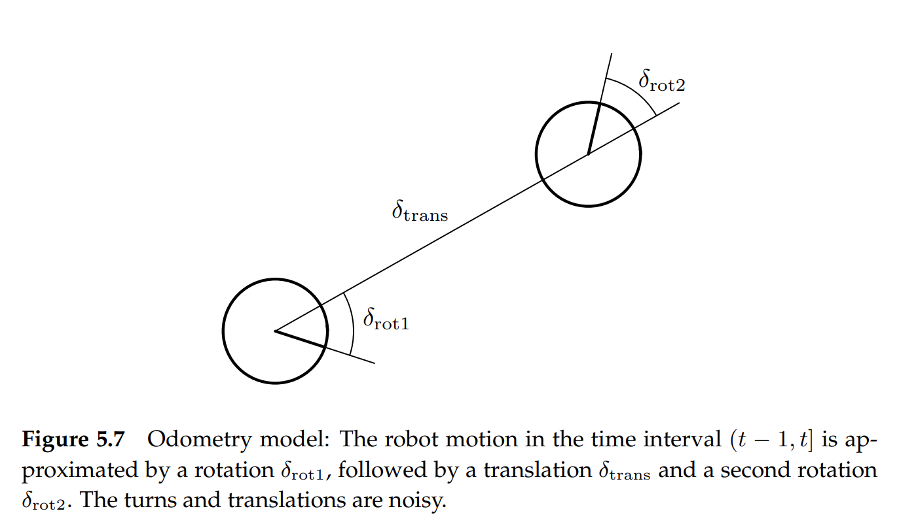

Lab 10 is based on Bayes Filter and a construtured map to localize the car in the simulation environment. The filtered trajectory is compared with ground truth in the trajectory plotter.
You can click on the image to view it in a larger window.
Based on odometry motion model, vanilla gaussian sensor model and a built map in the simulation environment, we use a Bayes Filter to integrate odometry and sensor readings to get better localization results of the simulated robot. It is required to write the crucial models and steps.
Bayes filters require to iterate over every possible state in the state space. For each state element (belief), do the following steps:
1. Prediction Step: \( \bar{bel (x_t)} = \int p(x_t | u_t, x_{t-1}) bel(x_{t-1}) dx_{t-1} \)
2. Update Step: \( bel(x_t) = \eta p(z_t | x_t) \bar{bel(x_t)} \)
In the grid map we are using, initial belief of each cell is set as uniform.
The module for computing control (pseudo control obtained from the current and previous odometries) is compatible to be used in the odometry motion model.
def compute_control(cur_pose, prev_pose):
""" Given the current and previous odometry poses, this function extracts
the control information based on the odometry motion model.
Args:
cur_pose ([Pose]): Current Pose
prev_pose ([Pose]): Previous Pose
Returns:
[delta_rot_1]: Rotation 1 (degrees)
[delta_trans]: Translation (meters)
[delta_rot_2]: Rotation 2 (degrees)
"""
orientationTrans = np.degrees(np.arctan2(cur_pose[1] - prev_pose[1], cur_pose[0] - prev_pose[0]))
delta_rot_1 = orientationTrans - prev_pose[-1]
delta_rot_2 = cur_pose[-1] - orientationTrans - delta_rot_1
delta_trans = np.sqrt((cur_pose[0] - prev_pose[0]) ** 2 + (cur_pose[1] - prev_pose[1]) ** 2)
return delta_rot_1, delta_trans, delta_rot_2
Once we know the global odometry (global x, y and bearing), we can calculate the \( rot1, trans, rot2 \) as the following code shows.

(Figure from: Probabilistic Robotics Page 133)
def odom_motion_model(cur_pose, prev_pose, u):
""" Odometry Motion Model
Args:
cur_pose ([Pose]): Current Pose
prev_pose ([Pose]): Previous Pose
(rot1, trans, rot2) (float, float, float): A tuple with control data in the format
format (rot1, trans, rot2) with units (degrees, meters, degrees)
Returns:
prob [float]: Probability p(x'|x, u)
"""
drot1, dtrans, drot2 = compute_control(cur_pose, prev_pose)
drot1 = mapper.normalize_angle(drot1)
drot2 = mapper.normalize_angle(drot2)
urot1 = mapper.normalize_angle(u[0])
utrans = u[1]
urot2 = mapper.normalize_angle(u[2])
prob = loc.gaussian(drot1, urot1, loc.odom_rot_sigma) * loc.gaussian(dtrans, utrans, loc.odom_trans_sigma) * loc.gaussian(drot2, urot2, loc.odom_rot_sigma)
return prob
For each initial belief, we should iterate over every belief in the previous time step to ensure the wholesome of condition probability. To accelerate computation, we may ignore
the believes in the previous time step if its value is below some threshold.
def prediction_step(cur_odom, prev_odom, threshold = 0.0001):
""" Prediction step of the Bayes Filter.
Update the probabilities in loc.bel_bar based on loc.bel from the previous time step and the odometry motion model.
Args:
cur_odom ([Pose]): Current Pose
prev_odom ([Pose]): Previous Pose
"""
# compute the control based on odometry readings.
u = compute_control(cur_odom, prev_odom)
# pinpoint the previous pose (bel t-1)
for xp in range(loc.bel.shape[0]):
for yp in range(loc.bel.shape[1]):
for ap in range(loc.bel.shape[2]):
# choose whether it is necessary to calculate.
if loc.bel[xp, yp, ap] > threshold:
# pinpoint the target pose (bel bar t)
for xc in range(loc.bel_bar.shape[0]):
for yc in range(loc.bel_bar.shape[1]):
for ac in range(loc.bel_bar.shape[2]):
# compute the transition probability of the control update.
transitionProb = odom_motion_model(mapper.from_map(xc, yc, ac), mapper.from_map(xp, yp, ap), u)
# update bel bar (initial belief) at this time step.
loc.bel_bar[xc, yc, ac] += transitionProb * loc.bel[xp, yp, ap]
Here we use the plain Gaussian noise model for the sensor readings.
def sensor_model(obs):
""" This is the equivalent of p(z|x).
Args:
obs ([ndarray]): A 1D array consisting of the true observations for a specific robot pose in the map
Returns:
[ndarray]: Returns a 1D array of size 18 (=loc.OBS_PER_CELL) with the likelihoods of each individual sensor measurement
"""
obsLen = obs.shape[0] # obs should be 18x1
prob_array = np.zeros(obsLen)
for i in range(obsLen):
prob_array[i] = loc.gaussian(loc.obs_range_data[i], obs[i], loc.sensor_sigma)
return prob_array
In the update step, we iterate over each initial belief and integrate it with the sensor model to get corresponding final belief. We should normalize each cell regarding the total probability of the whole grid cell.
def update_step():
""" Update step of the Bayes Filter.
Update the probabilities in loc.bel based on loc.bel_bar and the sensor model.
"""
# iterate over each grid cell, ignore normalizer for now.
for xc in range(loc.bel.shape[0]):
for yc in range(loc.bel.shape[1]):
for ac in range(loc.bel.shape[2]):
# update the belief based on initial belief and measurement model.
sensorProb = np.prod(sensor_model(mapper.get_views(xc, yc, ac)))
loc.bel[xc, yc, ac] = loc.bel_bar[xc, yc, ac] * sensorProb
# normalize after updating all believes.
loc.bel = loc.bel / np.sum(loc.bel)
Refer to the following video and images to check the results.
THE END